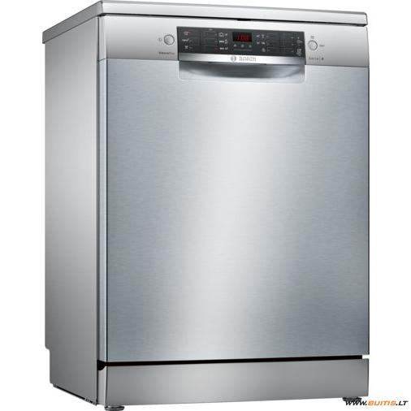

Welcome to indaplovė
Indaplovės - kainos nuo 189.00 € | Kaina24.lt
2020.10.29 08:25Prisijunkite
Prisijunkite prie sumanių pirkėjų bendruomenės!
Prisijungę galėsite žymėtis norimas prekes.
Arba
Prisijungti su el. paštu Nenaudoji Facebook arba Gmail? Ir neturi Kaina24.lt paskyros? Registruotis su el. paštu
Pamiršai slaptažodį? Priminti slaptažodį
Pasirinkite žemiau
Prekės ženklai
BOSCH 193 SIEMENS 69 ELECTROLUX 65 WHIRLPOOL 46 BEKO 37 AEG 26 CANDY 21 MIELE 20 GORENJE 20 SMEG 12 SAMSUNG 10 INDESIT 8 NEFF 7 HANSA 7 HOTPOINT-ARISTON 6 EDESA 6 HOOVER 4 AMICA 4 GODDESS 3 ETA 3 HOTPOINT 3 Daugiau...Kaina
Iki 290.00 € 290.00 - 350.00 € 350.00 - 410.00 € 410.00 - 470.00 € 470.00 - 530.00 € 530.00 - 590.00 € Nuo 590.00 €Pardavėjai
Derekis.lt 302 Varle.lt 252 Bigbox.lt 158 Rde.lt 142 Topocentras.lt 96 Senukai.lt 92 Efix.lv 87 Tvguru.lt 85 1a.lt 81 Tarnas.lt 80 Imk.lt 79 Tausa.lt 75 Buitex.lt 71 Trajektorija.lt 62 Technorama.lt 52 Merlonda.lt 49 Novastar.lt 40 Naminukas.lt 40 Btn.lt 38 Euronics.lt 38 Avitela.lt 37 Elektromarkt.lt 35 Gut.lt 34 Pigu.lt 33 Skytech.lt 31 Technikossala.lt 23 Virtuvesideja.lt 21 Ogmina.lt 18 Kilobaitas.lt 17 Ermitazas.lt 16 Pajurioverslas.lt 14 Technoaura.lt 12 Omgema.lt 8 Technolux.lt 4 Pirk.lt 3 Imuperku.lt 3 Fortakas.lt 3 Daugiau... Populiariausios indaplovės Naujausios indaplovėsApie projektą
Kaina24.lt - internetinės prekybos portalas. Čia rasite informaciją apie daugiau kaip 300 parduotuvių bei 2 000 000 prekių . Ieškokite įvairiausių prekių, vertinkite jas, lyginkite skirtingų pardavėjų kainas, raskite pigiau ir sutaupykite!
Indaplovės
(587) Prekės ženklai, ... Prekių eiliškumas populiariausia viršuje naujausia viršuje pigiausia viršuje brangiausia viršuje pagal abėcėlę pardavėjų kiekį 3Indaplovė Electrolux EES69310L
ELECTROLUX indaplovėsnuo 428.00 €
Peržiūrėti14 pardavėjų
2Indaplovė Bosch SMV45EX00E
BOSCH indaplovėsnuo 339.00 €
Peržiūrėti10 pardavėjų
5Indaplovė Whirlpool WIC 3C26
1 vertinimas WHIRLPOOL indaplovėsnuo 268.00 €
Peržiūrėti15 pardavėjų
15Indaplovė Electrolux ESF2400OW
ELECTROLUX indaplovėsnuo 259.71 €
Peržiūrėti17 pardavėjų
8Indaplovė Electrolux KEGB9300L
ELECTROLUX indaplovėsnuo 588.90 €
Peržiūrėti14 pardavėjų
13Indaplovė AEG FSB53927Z
AEG indaplovėsnuo 406.50 €
Peržiūrėti13 pardavėjų
10Indaplovė Electrolux EEM48321L
ELECTROLUX indaplovėsnuo 479.00 €
Peržiūrėti12 pardavėjų
20Indaplovė AEG FSE63717P
AEG indaplovėsnuo 512.93 €
Peržiūrėti14 pardavėjų
14Indaplovė Electrolux ESL4510LO
ELECTROLUX indaplovėsnuo 298.51 €
Peržiūrėti12 pardavėjų
27Indaplovė Bosch SMV24AX01E
BOSCH indaplovėsnuo 287.99 €
Peržiūrėti15 pardavėjų
17Indaplovė Bosch SMS46KI01E
BOSCH indaplovėsnuo 375.99 €
Peržiūrėti12 pardavėjų
52Indaplovė Electrolux EEC87300L
ELECTROLUX indaplovėsnuo 745.00 €
Peržiūrėti16 pardavėjų
30Indaplovė Electrolux ESF2400OS
ELECTROLUX indaplovėsnuo 273.70 €
Peržiūrėti12 pardavėjų
18Indaplovė Electrolux EEG69310L
ELECTROLUX indaplovėsnuo 453.33 €
Peržiūrėti10 pardavėjų
4Indaplovė Bosch SPV25CX01E
BOSCH indaplovėsnuo 305.98 €
Peržiūrėti5 pardavėjai
1Indaplovė Bosch SPV46MX00E
BOSCH indaplovėsnuo 399.00 €
Peržiūrėti3 pardavėjai
21Indaplovė Bosch SMV45AX00E
BOSCH indaplovėsnuo 309.44 €
Peržiūrėti10 pardavėjų
12Indaplovė Whirlpool WBC 3C26
WHIRLPOOL indaplovėsnuo 308.00 €
Peržiūrėti8 pardavėjai
6Indaplovė Samsung DW60M6050BB
SAMSUNG indaplovėsnuo 385.00 €
Peržiūrėti6 pardavėjai
34Indaplovė Whirlpool WSFO 3O23
WHIRLPOOL indaplovėsnuo 265.53 €
Peržiūrėti10 pardavėjų
1 2 3 4 5 6 7 PaskutinisSusiję kategorijos
Šaldytuvai Skalbimo mašinos Džiovyklės Smulki buitinė technika Orkaitės Mikrobangų krosnelės Viryklės Gartraukiai Kaitlentės Šaldikliai Įmontuojamos indaplovės Namų technikaInformacija
Apie projektą Pirkėjo atmintinė D.U.K. Privatumo politikaPardavėjams
Reklama portale KontaktaiKatalogas
Internetinės parduotuvės Kategorijos Struktūra TOP 5 Русская версия2016 Kaina24.lt - internetinės prekybos portalas. Čia rasite populiariausių Lietuvos parduotuvių - tokių kaip Senukai, Topo centras, Elektromarkt, Avitela, Skytech, Kilobaitas, Fortakas, Technorama, Pigu.lt, Rde.lt, 1a.lt, Varle.lt geriausius kainų pasiūlymus. Pasinaudokite Kaina24.lt portalu, suraskite norimą prekę bei jos pardavėją pigiau ir sutaupykite! Pirkdami internetu, prekes galite įsigyti gyvendami Vilniuje, Kaune, Klaipėdoje, Šiauliuose, Panevėžyje ar bet kurioje kitoje vietovėje.
